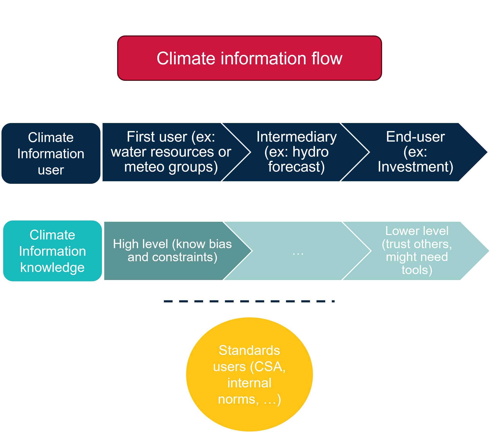

Findings
Flow of information
A common observation from the workshops was that climate information typically follows a chain of use within organizations. It begins with initial users—often from water resources or meteorology teams—who collect climate data and possess strong knowledge of its limitations and biases. These users process or reconstruct the data before passing it along to other teams, such as those responsible for load forecasting or outage planning. However, critical information about the data’s limitations is often lost along the way, as each team tends to assume that the data they receive has already been validated and corrected for uncertainties.
Another category of climate information users includes those who rely on standards, such as design values from organizations like the CSA or internal norms. These users may not be familiar with the origins or limitations of the data but trust that the authoritative body behind the standards ensures its reliability.

Overview of decision-making challenge in the Workshops
The Sankey diagram below provides a preliminary overview of the applications discussed by participants during the workshops (across all organizations). Note: This is an early draft that includes only a limited set of applications.
The first set of nodes (leftmost column) represents the sectors involved in the decision-making challenges. The second column provides a brief description of the decision context. The third column highlights the climate variables associated with these challenges, and the final column outlines key characteristics identified by participants as essential for informed decision-making.
Please note that the values shown may exceed the number of visible incoming or outgoing flows. This indicates that certain links were cited multiple times across different decision-making contexts by participants.
The workshops highlighted a diverse range of decision-making challenges across various sectors, each with unique climate data needs and considerations. However, several gaps in available climate datasets emerged:
Combined events: Many applications require understanding the interplay of multiple climate variables. For instance, transmission and distribution of overhead lines are affected by the combined effects of wind and ice accumulation. CSA standard consider the combination of 1/50 years wind and ice loads for design purposes. Freezing rain as well as wet snow are also of interest for this sector as it affects component strength ratings and even the consideration of using underground in rural areas. Vegetation management also takes an interest in these combined events as they can lead to tree falls and power outages.
Extremes: A significant number of applications focus on extreme weather events of climate variables. Most infrastructure designs are made for rare events (e.g., 1/50 years, 1/100 years, even 1/1000) to assure the structure resilience. If they are not directly included in standards (such as precipitation, wind, temperature and ice), they can be estimated from climate dataset and IDF curves for precipitation. Many other sectors look at extremes to plan and assure system reliability such as demand forecasting that looks at extreme temperature events to evaluate peak demand.
High impact events: High impact events refer to natural disaster such as droughts, floods, wildfires, or storms. These are of particular concern for enterprise risk assessment and emergency planning. Understanding the frequency, intensity, and potential impacts of such events are crucial for developing effective mitigation and response strategies. They are also relevant for all sectors involved in infrastructure planning and operation to ensure resilience against such events.
Hourly data: Several decision-making contexts require high-resolution temporal data (hourly or sub-hourly) to capture the dynamics of weather events and demand. Hourly wind data is particularly critical for wind power generation forecasting and outages management. Hydroelectricity generation forecasting also require to use sub-daily dataset to have a better predictor of energy. Similarly, demand forecasting also plans for hourly peaks in electricity consumption and therefore even econometric models are often built on an hourly basis. Hourly data is also used for HVAC system design (weather files). Professionals working in hydraulic design, dam safety review, or streamflow projections were also adamant about generally needing higher resolution data, equally temporal or spatial.
Urban vs. rural data: Some applications distinguish between urban and rural settings, recognizing that climate impacts can vary significantly based on location, especially for temperature and wind. This is particularly relevant for transmission and distribution infrastructure design where urban heat island can affect lines sagging as well as conductor ratings for urban stations. Wind speed can also affect overhead lines differently in urban vs. rural areas due to building interference versus open areas.